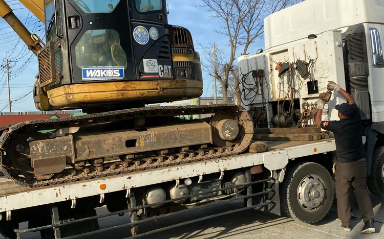
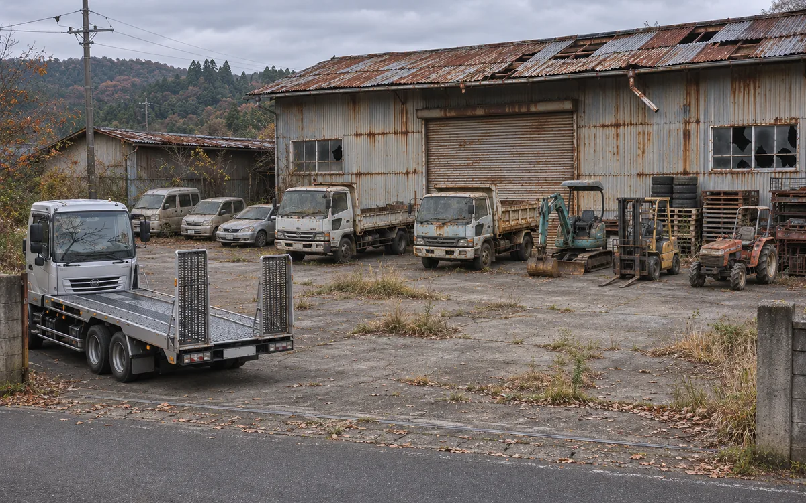
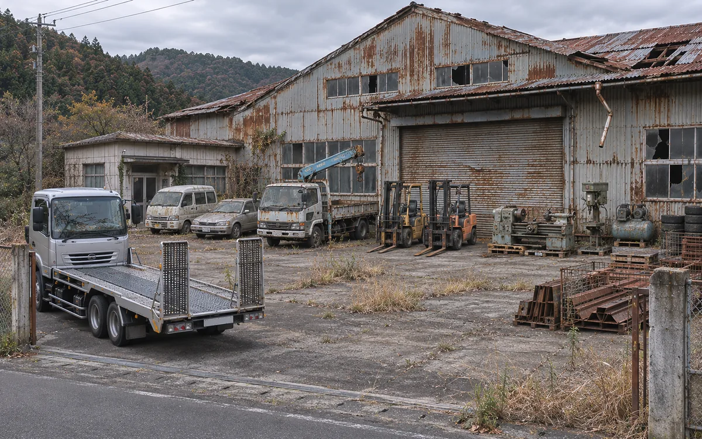
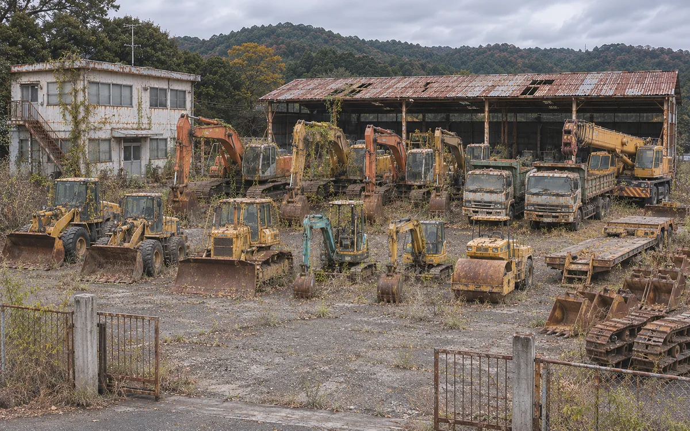
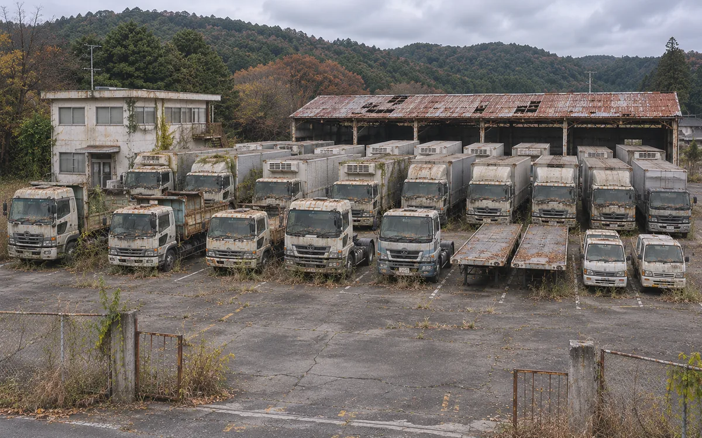
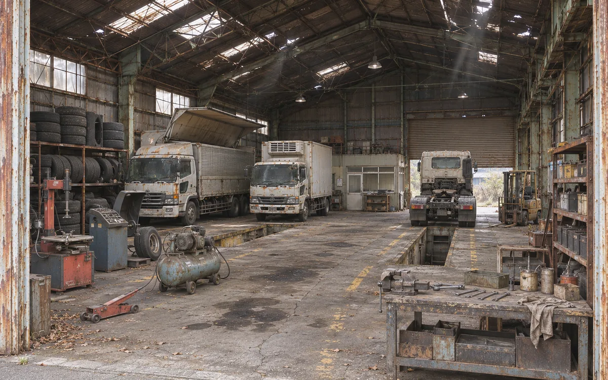
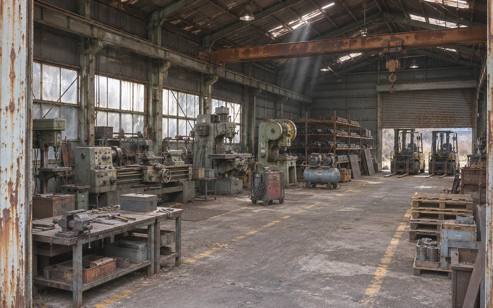

会社をたたむとき、敷地の車両・機械をまとめて
廃業・事業整理の
一括買取車両・重機・機械・部品まで

会社の廃業・倒産・工場閉鎖に伴う
車両・機械を、
まとめて買い取ります。
トラック・重機・フォークリフト・農機具から工具・部品・スクラップまで。
現地調査・お見積りは無料。閉鎖日に合わせて、全国どこでも引取り無料です。
秘密厳守で対応します。

敷地にあるものを
全部まとめて引き取ります
種類ごとに別々の業者を探す必要はありません。
当社1社で、一度に整理できます。
- 🚗乗用車・社用車
- 🚚トラック・ダンプ・バス
- 🏗️重機・建設機械
- 📦フォークリフト
- 🚜農機具・トラクター
- 🛠️工具・機械設備
- ⚙️部品・タイヤ・スクラップ
- 🔧不動車・車検切れ
こんな会社さま・ご担当者さまへ

長年使ってきた車両・機械を、まとめて整理したい経営者の方。
明け渡しの日までに、敷地を空にしなければならない方。
トラック・トレーラー・冷凍車・軽トラまで、車庫にある車両をまとめて整理したい方。
ショベル・ホイールローダー・ブルドーザー・ローラー・クレーン・アタッチメントまで、まとめて整理したい方。
使わなくなったトラックや重機、設備を手放したい方。
破産管財人の弁護士の方、清算人・税理士の方からのご依頼にも対応します。
ご家族・相続人の方からのご相談も、書類をご案内しながら進めます。
海外輸出ルートがあるため、古い車両・機械にも値段がつくことがあります。


こんなご相談をいただいています
処分ではなく買取をご提案します。廃車寸前・低年式・過走行の車両も対象です。
旋盤・フライス盤・マシニングセンター・プレス機・コンプレッサーなどの中古機械も、車両と一緒に買取します。
海外輸出ルートがあるため、処分費がかかるはずのものに値段がつくことがあります。比較してからお決めください。
車両・機械・部品・タイヤ・鉄くずまで、まとめて搬出します。
軽バン・黒ナンバーの軽貨物車から大型トラックまで、台数が多くても対応します。
長年使ってきた車両・機械を、次に使う人へつなぎます。
EXPORT ZONEに任せる理由
車両・重機・機械・部品・スクラップまで、まとめて一度に整理できます。
日本全国どこでも伺います。台数が多い場合も、現地で確認してお見積りします。
明け渡しの日程に合わせて、搬出の計画を立てます。引取り費用は無料です。
従業員や取引先に知られないよう、連絡の時間や現地調査の日時を調整します。
買取の内容を記載した明細書を発行します。経理・決算の資料としてお使いいただけます。
抹消登録などの手続きは無料で代行し、完了後に書類のコピーをお渡しします。

当社が取り扱った車両・機械の一部

※掲載している写真は、当社がこれまでに取り扱った車両・機械や作業の一部です。

ご依頼の流れ
お電話・LINE・フォームで。車両リストや敷地の写真があればお送りください。
現地で車両・機械を確認し、買取金額と引取りの計画をご案内します（無料）。
閉鎖日・明け渡しの日に合わせて、搬出の日程を決めます。
積載車・トレーラーなどで、まとめて引き取ります。動かないものも対応します。
法人の口座へお振込みし、買取明細書と手続き完了後の書類のコピーをお渡しします。
・リース会社・信販会社が所有者になっている車両は、売却に所有者の承諾が必要です。確認の方法をご案内します。
・破産手続きが始まった後は、会社の財産は破産管財人の管理になるため、破産管財人の方を通じてお取引します。
他社に売る前に、一度だけご相談ください。
「処分費がかかる」と言われた古いトラック・重機・機械も、海外輸出ルートがあるから値段がつくことがあります。比べてから決めて大丈夫です。
📝 無料見積り・ご相談
台数・種類のわかる範囲で大丈夫です。車両リストや敷地の写真があれば添付してください。現地調査・お見積りは無料、担当者が通常24時間以内にご連絡します。
✅ 送信が完了しました
お問い合わせありがとうございます。担当者が内容を確認し、通常24時間以内にお電話またはメールでご連絡いたします。
お急ぎの方は ☎ 0120-888-405 までお電話ください。
🔒 お送りいただいた写真・書類は査定のためにのみ使用します。当社サーバー上のデータは7日後に自動で削除されます。お取引に至らなかった場合は、担当者の端末に届いた写真・書類も削除いたします。
よくあるご質問
会社をたたむので、敷地にある車両や機械を全部まとめて売れますか？
はい。乗用車・社用車、トラック・バス、重機・建設機械、フォークリフト、農機具、工具・機械設備、部品・タイヤ・スクラップまで、まとめて一括で買取します。種類ごとに別々の業者へ依頼する必要はありません。
廃業・事業整理で売れる車両や機械には、どんな種類がありますか？
乗用車・軽自動車・社用車、トラック・ダンプ・バス、ショベルカーなどの重機・建設機械、フォークリフト、トラクター・コンバインなどの農機具、工具・機械設備、部品・タイヤ、鉄くずなどのスクラップまで対象です。動かないもの、車検切れのものもご相談ください。
古くて動かないトラックや重機にも値段がつきますか？
当社は海外への輸出ルートを持っているため、国内で「処分費がかかる」と言われた古いトラックや重機にも、値段がつくことがあります。まずは写真やリストでご相談ください。
工場や倉庫の閉鎖日に合わせて引き取ってもらえますか？
はい。閉鎖日や明け渡しの日程をお伺いし、それに合わせて引取りの日程を組みます。台数が多い場合は、複数日に分けて計画的に搬出します。
現地調査や見積りは無料ですか？
はい。現地調査・お見積りは無料です。日本全国どこでも伺い、引取りの費用もかかりません。
従業員や取引先に知られずに進めたいのですが。
秘密厳守で対応します。ご連絡の時間帯や現地調査の日時、引取りの方法も、ご希望に合わせて調整します。
支払い方法と、経理に使える書類はもらえますか？
お支払いは、法人の口座へのお振込みに対応しています。買取した車両・機械の内容を記載した買取明細書を発行し、抹消登録などの手続きが完了したら書類のコピーもお渡しします。
廃業する会社のトラックや重機は、処分費を払って廃棄するしかありませんか？
いいえ。廃車寸前のトラックや古い重機でも、海外への輸出ルートがあるため買取できることがあります。産業廃棄物として処分費を払う前に、一度ご相談ください。
工場の機械設備（旋盤・フライス盤・プレス機など）も買い取ってもらえますか？
はい。工作機械・コンプレッサー・溶接機・工具などの機械設備も、車両や重機と一緒にまとめて買取します。動かない機械もご相談ください。
社用車・営業車を何台もまとめて売却できますか？
はい。軽バンや黒ナンバーの軽貨物車、営業車、配送車、トラックまで、台数が多くても一括で買取します。名義変更・抹消登録の手続きも無料で代行します。
リースやローンが残っている車両も売れますか？
リース会社や信販会社が所有者になっている車両は、売却に所有者の承諾が必要です。残債や所有者の確認の方法をご案内しますので、まずはご相談ください。
破産・清算の手続き中ですが、依頼できますか？
はい。破産手続きが始まった後は、会社の財産は破産管財人の管理になるため、破産管財人の方を通じてお取引します。管財人の弁護士の方、清算人・税理士の方からのご依頼にも対応しています。
経営者が亡くなった会社の車両・機械も整理できますか？
はい。ご家族や相続人の方からのご相談にも対応します。必要な書類をわかりやすくご案内し、名義変更・抹消登録などの手続きは無料で代行します。